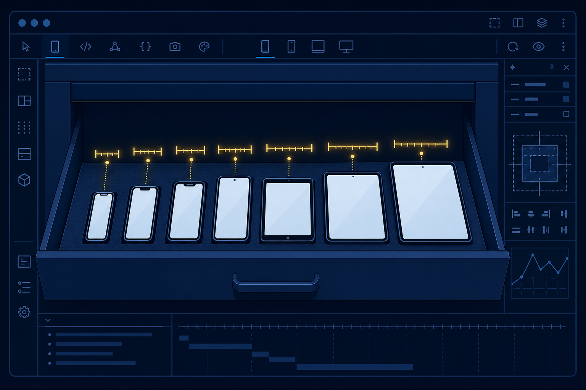
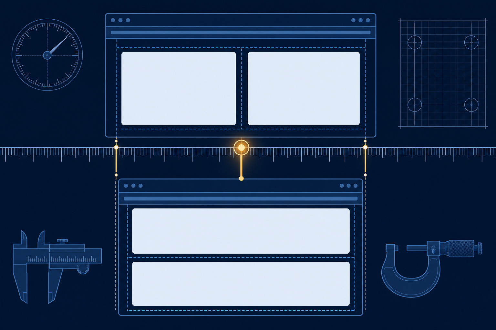
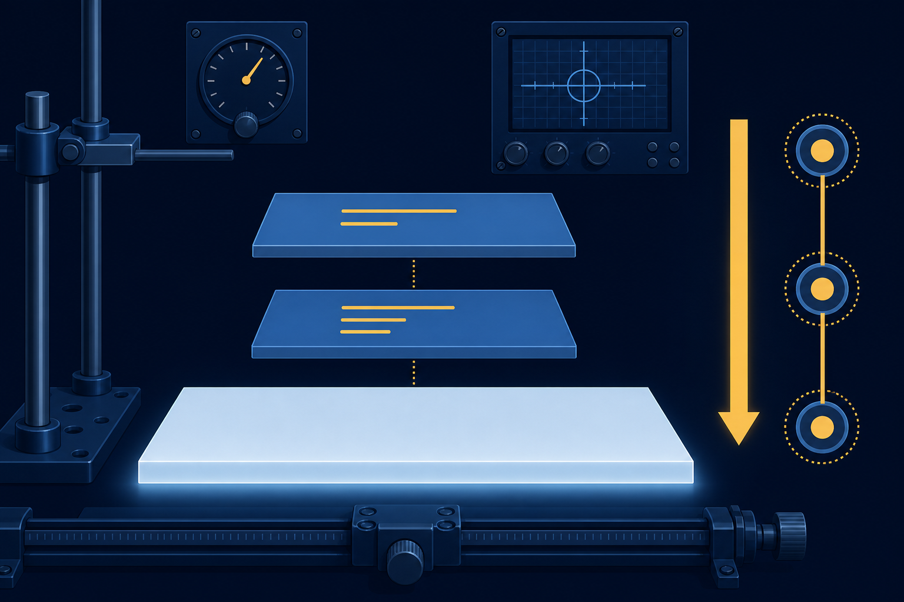

Report
Implement the viewport tag and test in device mode.
Your phone wireframes made promises. Today the stylesheet keeps them.
Implement the viewport tag and test in device mode.
Construct media queries at content-driven breakpoints.
Diagnose which layer, base or override, owns a fix.
img {
max-width: 100%; /* never wider than its box */
height: auto; /* keep the shape while shrinking */
}An 800px photo in a phone-width column: capped, shrunk, intact.
Full rows break into stacksflex-wrap · Chapter 6
Images never overflowfluid images · owned
The column never outgrows the screenmax-width · Chapter 5
Regions rearrange below a chosen widthmedia queries · today
Type and spacing step down on phonesmedia queries · today
Name: what those two mechanisms do, and the one thing neither of them can do.
Then shrunk until they fit. The whole layout, none of the reading.
<meta name="viewport"
content="width=device-width, initial-scale=1">
Honesty, not magic. The stylesheet still does the adapting.
<head>
<meta charset="UTF-8">
<meta name="viewport" content="width=device-width, initial-scale=1">
<title>Recycling Guide | PC Computer Club</title>
<link rel="stylesheet" href="club-styles.css">
</head>The validator never asks for this line. Your skeleton is the reminder.

Predict: what does device mode show for each page, and what rendered width does each one report?
@media (max-width: 720px) {
.signup-banner {
background-color: #5e9959;
}
}
@media (max-width: 600px)
“At most 600 wide”
Fires from 0 up to the 600 tick, then sleeps.
@media (min-width: 600px)
“At least 600 wide”
Fires from the 600 tick up, without limit.
Each feature includes the width it names.
Which fires: (max-width: 600px), (min-width: 600px), or both?
WindowQuery awakeComputed size
400pxmax-width: 500px22px · override
700pxnone28px · the base
1000pxmin-width: 900px36px · override
Start from the base, then let each awake query overwrite it in source order.

Read the width where it happens. That is your breakpoint.
Name it after the content event: "where the card row drops to one."
/* Base: every width the queries leave alone */
.update-card {
padding: 20px;
}/* Override: only the difference */
@media (max-width: 600px) {
.update-card {
padding: 10px;
}
}Copy all five declarations into the block, and you plant next month's disagreement.
Chapter 4's tie-breaker, still on duty: among equals, later wins.
Mobile-first: narrow base, min-width grants room
Desktop-first: wide base, max-width tightens
The club site grew up at laptop width. The lab retrofits, honestly.
Compute the card's padding at 480, 800, and 1100 pixels.
The viewport line in all three heads.
Walk each page at three widths.
Pin the gallery's own breakpoint.
One block, three differences, below the base.
Device mode, then both validators to zero.
Estimated time: 4-5 hours · Submit skills-lab-8a-lastname.zip

Exit ticket: Why must a query block sit below the base rules it adjusts? Name the tie-breaker.
Next: the site serves every screen. Does it serve every visitor?